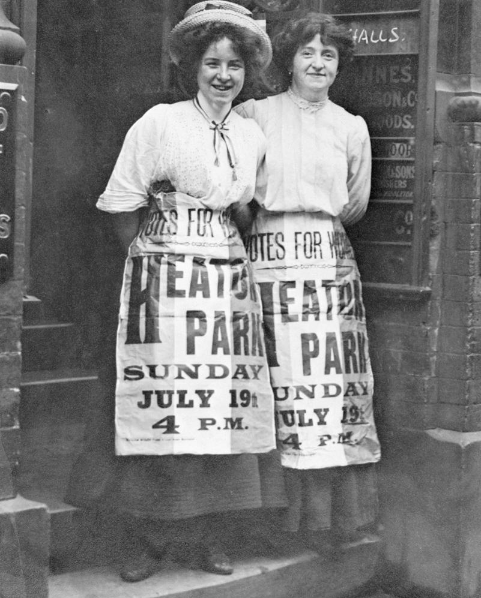
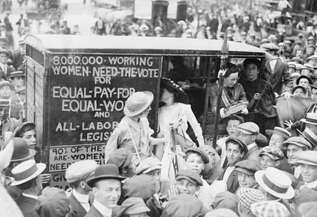
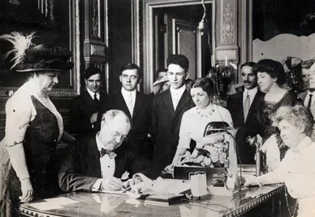
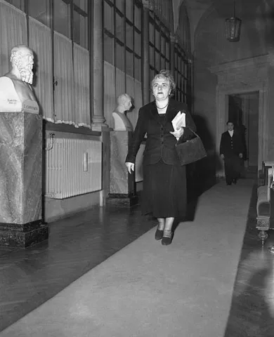
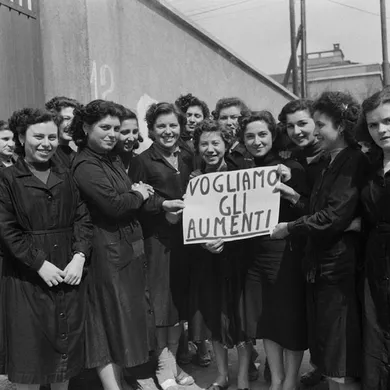
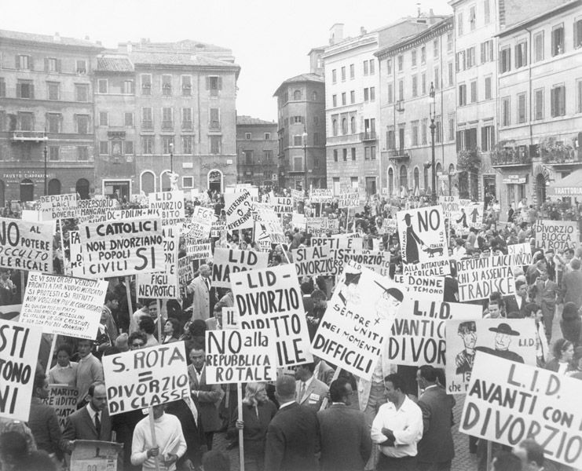
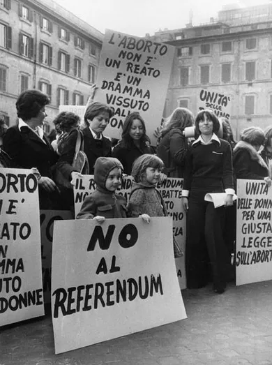
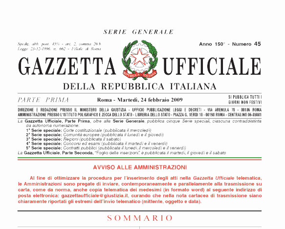

Battaglie delle Donne per i Loro Diritti
Home Dalle suffragette
Le suffragette inglesiTra la fine dell'800 e gli inizi del '900 nel Regno Unito presero corpo le prime manifestazioni delle Suffragette. In questa foto Mabel Capper e Patricia Woodlock promuovono un incontro all'Heaton Park di Manchester nel Luglio del 1908.  Nel giro di qualche anno le manifestazioni femminili si diffusero anche negli Stati Uniti. A Washington giovani donne impegnate in una manifestazione per ottenere diritti dal suffragio femminile all'equiparazione salariale sul lavoro. Il tutto tra la curiosità e l'ilarità degli uomini presenti. Suffragio femminile26 Giugno 1913: il Governatore dell'Illinois Dunne firma la legge per il suffragio femminile. 
In Italia il diritto di voto alle donne venne concesso solo il 30 Gennaio 1945 con il d.l. De Gasperi - Togliatti. La prima votazione a cui poterono partecipare le donne di età maggiore ai 21 anni fu in occasione delle elezioni amministrative del 10 marzo 1946. A livello nazionale invece fu quella per eleggere l'Assemblea Costituente. In questa immagine la pagina de "La domenica del Corriere" del 4 Agosto 1946 con le miniature delle 21 donne elette in quell'occasione.  La Senatrice Lina Merlin, che diede il nome alla famosa legge che portò all'abolizione delle case chiuse nel 1958.  Milano, 1954: operaie in sciopero per l'aumento salariale. Legge sul divorzio7 Giugno 1969, Roma: in Piazza Navona si svolge una grande manifestazione in favore della legge sul divorzio. Legge sull'abortoRiunone delle donne in Piazza Montecitorio mentre è in corso la discussione sulla legge 194 che verrà poi approvata il 22 Maggio dello stesso anno e che prevede la possibilità di abortire nei primi 90 giorni di gestazione.  Introdotta nel 2009 la legge sullo stalking, che punisce il reato di atti persecutori. Movimento "Se non ora, quando?"Febbraio 2011: Migliaia di donne e uomini marciano per le vie di tutta Italia per protestare contro la mercificazione della donna e gli scandali sessuali dell'allora Premier Silvio Berlusconi. |